Alfabetización Inicial
Alfabetización Inicial Alfabetización inicialLa meta
01 · La meta
Alfabetización inicial
Desarrollar progresivamente las habilidades fundamentales de lectura y escritura en los estudiantes.
La Estrategia ALFA busca que las niñas y los niños de transición, primero y segundo grado aprendan a leer y escribir desde sus primeros años escolares, con materiales basados en la ciencia de la lectura y acompañamiento directo en el aula.
Objetivos
Es una estrategia de la Gobernación de Antioquia, liderada por la Secretaría de Educación con el acompañamiento de la Primera Dama, Susana Ochoa Henao. Su propósito es fortalecer la lectura y la escritura desde los primeros años de escolaridad, como base para los demás aprendizajes y para trayectorias educativas sólidas.
Desarrollar progresivamente las habilidades fundamentales de lectura y escritura en los estudiantes.
Formar, acompañar y proveer materiales a los docentes para fortalecer una enseñanza efectiva.
Aplicar métodos estructurados que desarrollen la conciencia fonológica, la decodificación, la fluidez y la comprensión lectora.
Utilizar herramientas de evaluación, como la prueba EGRA, para medir avances y orientar las decisiones en el aula.
Implementar acciones de remediación adaptadas a las necesidades de los estudiantes para acompañar su progreso.
Los programas
ALFA se implementa con formación y acompañamiento a los docentes y con programas de enseñanza estructurada y basada en evidencia, adaptados a cada momento de la trayectoria escolar. Las pruebas EGRA permiten seguir los avances y orientar las decisiones en el aula.
Aprendamos Todos a Leer
Aprendamos Todos a Leer es un programa de enseñanza de la lectura y la escritura dirigido principalmente a niñas y niños de los primeros grados escolares.
ATAL se utiliza como una herramienta pedagógica para fortalecer el aprendizaje de la lectura y la escritura desde los primeros años, especialmente en transición y primero. Su propuesta se basa en la ciencia de la lectura, con una enseñanza:
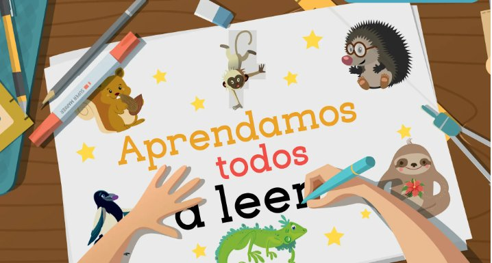
Método estructurado de alfabetización
Kalulu busca fortalecer las habilidades fundamentales de lectura de los estudiantes que aún no las han consolidado. Mediante una enseñanza fonética explícita, sistemática y progresiva, promueve el aprendizaje de las relaciones entre las letras y los sonidos y favorece la decodificación de palabras.
Se utiliza como una herramienta de remediación para brindar apoyo pedagógico a los estudiantes de segundo grado que requieren fortalecer sus aprendizajes y avanzar hacia una lectura cada vez más precisa y fluida, con entrega de materiales pedagógicos y acompañamiento grupal a los docentes de ese grado.
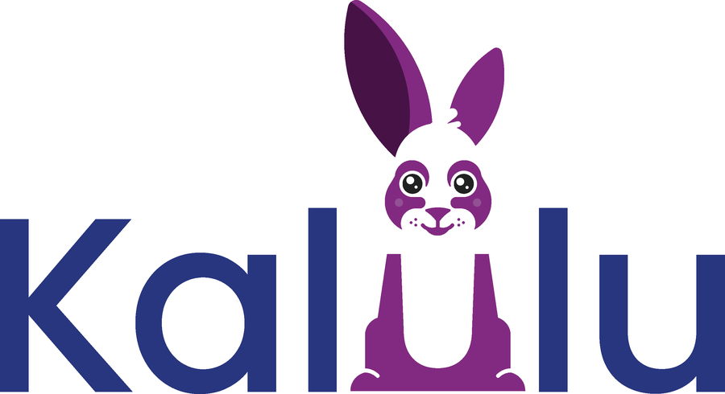
Componente de secundaria
Avanza+ es el componente de secundaria de la estrategia ALFA, orientado a fortalecer las habilidades lectoras de estudiantes de sexto a noveno que requieren apoyo para avanzar en sus aprendizajes.
Algunos estudiantes ya relacionan las letras con sus sonidos y leen palabras, pero aún tienen dificultades para leer con fluidez y comprender lo que leen. Por eso, Avanza+ busca fortalecer la fluidez, la comprensión, el vocabulario, la ortografía y la producción escrita, con acciones pedagógicas acordes con las necesidades identificadas.
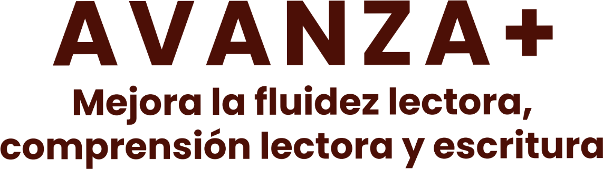
Aliados y operadores
La implementación de la Estrategia ALFA es posible gracias a la articulación de aliados técnicos y operadores que suman capacidades para fortalecer la calidad, el alcance y la sostenibilidad de la iniciativa en el territorio.
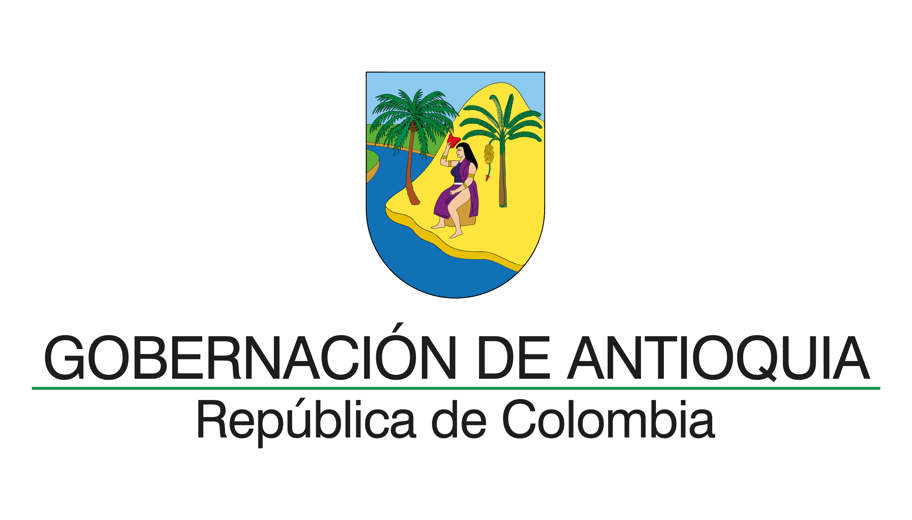
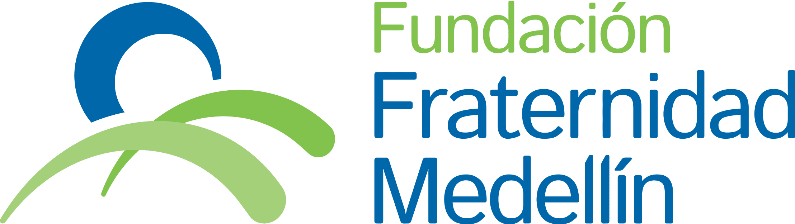
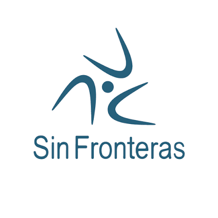
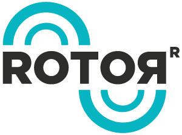
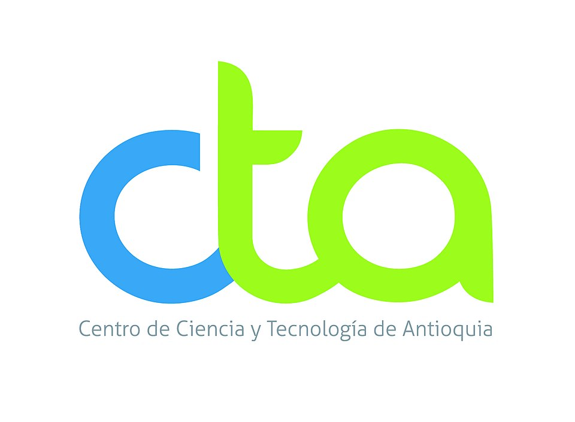
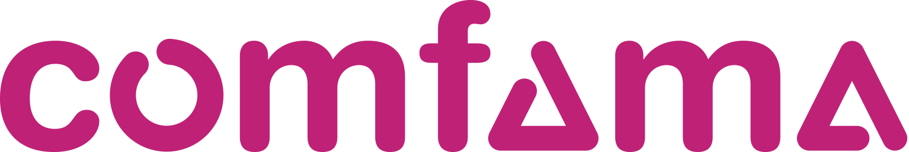
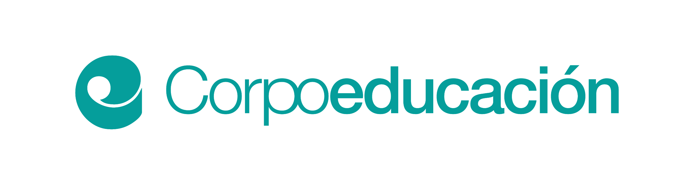
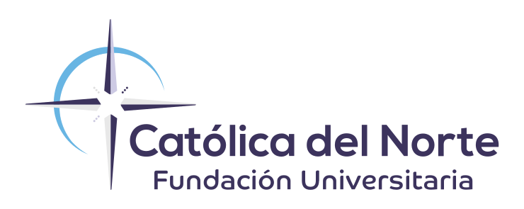
Formación
Dos cursos virtuales y gratuitos para profundizar en la enseñanza de la lectura y la escritura y en las decisiones de política que la hacen posible.
Banco Interamericano de Desarrollo
Formación para fortalecer la enseñanza de la lectura y la escritura inicial basada en evidencia en América Latina.
Banco Mundial
Las bases científicas y de política pública para que todas las niñas y los niños aprendan a leer.